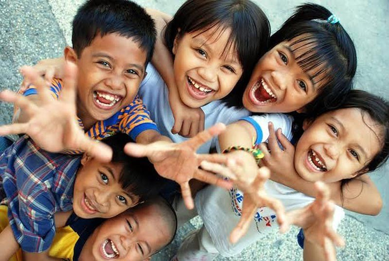

WHY SO MANY ORPHANS?
The estimated number of orphans in the Philippines is now over 2,000,000! The following four factors are key to understanding the orphan crisis in the Philippines. We may not be able to stop natural disasters, but we can avert this crisis by doing something about the other three.
NATURAL DISASTERS
The Ring of Fire, or typhoon belt, stretches around the Philippines. As a result, the country has been hit by a slew of catastrophic typhoons, earthquakes, volcano eruptions, and other natural calamities. Approximately 80 typhoons form each year over tropical waters, 19 of which penetrate the Philippine region and six to nine of which make landfall. The Philippines has been declared the world's most vulnerable country to tropical storms. Tropical storms, like the recent Haiyan typhoon, can produce ten times the energy of the Hiroshima atomic bomb. Homes, villages, and families are all destroyed by such extreme weather. Survivors are usually children who have lost contact with their parents. Orphans are frequently born as a result of natural disasters.
LACK OF EDUCATION
The mission of the Philippines' Department of Education, Culture, and Sports is to "provide quality basic education that is equitably accessible to all..." CNN Philippines recently reported that six out of ten families lacked access to basic education in 2016 and five out of ten families lacked access to basic education in 2017.
As in most countries, there is a considerable difference in educational attainment between different social groups. The wealthy enjoy better educational opportunities than the impoverished. And, with roughly 25% of the population living in poverty, many Filipinos, although being literate, find it difficult to advance in life.
POVERTY
Corruption is rampant in Philippine politics and industry, impeding social mobility and prosperity. Power is concentrated among powerful families and well-connected individuals, leaving the impoverished with very little opportunities to improve their situation. According to the Rural Poverty Portal, half of the Philippines' impoverished live in rural areas. Indigenous peoples, landless laborers, fishers, small farmers, mountain people, and women are among the lowest of the poor. For these people, deforestation, reduced fisheries, and unproductive cropland are important issues. In addition, illiteracy and a lack of educational opportunities are serious problems. — which leads us to the final factor contributing to the orphan crisis in the Philippines.
TEEN/PRETEEN PREGNANCY
About 6% of Filipino girls are pregnant as teenagers. It may appear to be a minor number, but according to Save the Children's Global Childhood Report from 2019, it is the second highest rate in Southeast Asia. According to the Philippine Statistical Authority, 538 infants are delivered to Filipino young moms EVERY SINGLE DAY in 2017. Every year, about 200,000 teenagers become pregnant. To make matters worse, there are approximately 40 births each year by girls who have not yet reached the age of thirteen. These young women are often unprepared for motherhood and have no choice but to give up the child they have nurtured for nine months to orphanages and care centers.
WHAT WE CAN DO TO HELP
BASIC NEEDS
+ Daily, nutritious meals and snacks.
+ Clothing.
+ An excellent education that will prepare them for a successful future.
+ They will receive high-quality healthcare, including regular wellness check-ups as well as any acute care and medications they may require.
SHELTER
What most of us have in common is a great need for others, particularly those of us who are most vulnerable. A safe and stable place to live is crucial for a new-born infant or a child who has been rescued from the streets, which is why building family-style facilities is a component of our goal.
LOVE
According to experts, once a child's physiological needs are addressed that they may have a sense of stability and protection, the youngster needs to feel loved and belonged to in order to flourish.
Our facilities are staffed with men and women who love and care for the children, ensuring that each child is shown and experiences that delicate and guiding love.